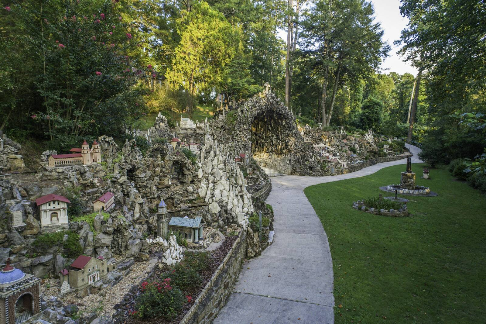
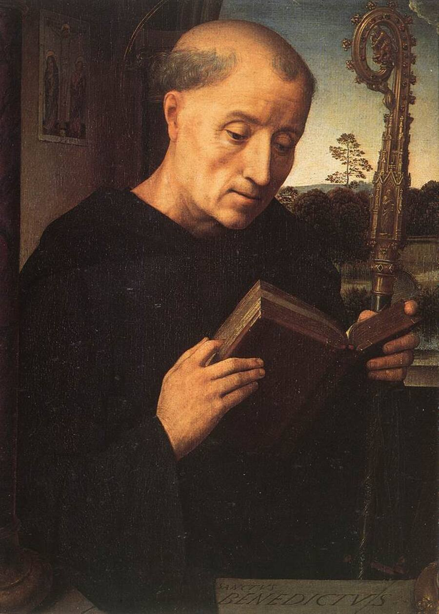

Oblates
Something like monks living out in the world
The Ave Maria Grotto, Saint Bernard Abbey · © Saint Bernard Abbey
Maybe you've sung with us once or twice, and you want more. You have a family, a job, a home. You aren't called to live in a monastery. But you'd like your life to be shaped by the same prayer. There's a path for that.
What is an oblate?
Benedictine oblates are Christian men and women who are joined to a particular Benedictine monastery. They share a spiritual bond and a real friendship with the monks there, and they try to live out the Rule of Saint Benedict in their ordinary lives.From the abbey's Oblates page (“Oblate” comes from a Latin word meaning “offered.”)
For more than fifteen hundred years, the Rule of Saint Benedict has helped people seek God. Oblates bring it home: into the kitchen, the office, the car, the hospital room.
Protestants too
You don't have to be Catholic to become an oblate of Saint Bernard Abbey. Some of our oblates are Protestant. They pray with us, learn from the Rule, and are part of our wider family.
What oblates receive
- A year of formation to learn the Rule and the life, before making a promise as an oblate.
- Spiritual direction: a guide to walk with you in prayer.
- Monthly conferences with the monks.
- A place in choir. Oblates may stand and pray in choir with the monks.
- Eucharistic adoration on the first Sunday of each month.
- Special events and friendship with the monks, including invitations to our holiday festivals.
All of this is free. There are no fees, no dues, and nothing to buy. Like the prayer in our church, it is simply given.
Confirm: Is adoration on first Sundays for oblates only or open to all? What time?

How to begin
Start by coming to pray with us. Then reach out to the abbey's oblate director through the Oblates page on the abbey's website, or call the monastery at 256-734-8291.